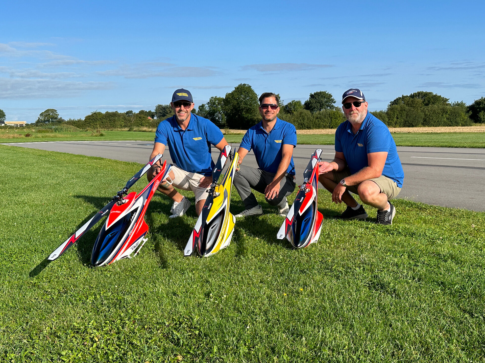

National Team
The UT points standings that form the basis for national team selection ahead of the European and World Championships.
Highlighted placings (1–3) each year are the pilots selected for the national team.
UT points 2026
UT points (normalised) ahead of the FAI-F3C national team for the 2027 World Championships, after 3 of 3 competitions:
| # | Pilot | Points |
|---|---|---|
| 1 | Johannes Melén | 2000p |
| 2 | Krister Thorstenson | 1914p |
| 3 | Jesper Almhagen | 1753p |
| 4 | Anders Stålblom | 1736p |
| 5 | Jonas Grönlund | 1503p |
| 6 | Magnus Ström | 1481p |
| 7 | Adam Englund | 961p |
| 8 | Björn Forsberg | 614p |
| 9 | Johan Wolmar | 468p |
UT points 2025
UT points (normalised) after 2 of 2 competitions:
| # | Pilot | Points |
|---|---|---|
| 1 | Johannes Melén | 2000p |
| 2 | Jesper Almhagen | 1761p |
| 3 | Anders Stålblom | 1674p |
| 4 | Jonas Grönlund | 1504p |
| 5 | Krister Thorstenson | 958p |
| 6 | Henrik Finnström | 909p |
UT points 2024
UT points ahead of the FAI-F3C national team for the 2025 World Championships, normalised points after 1 competition:
| # | Pilot | Points |
|---|---|---|
| 1 | Johannes Melén | 1000p |
| 2 | Henrik Finnström | 862p |
| 3 | Anders Stålblom | 843p |
| 4 | Jesper Almhagen | 817p |
UT points 2023
UT points ahead of the FAI-F3C national team for the 2024 European Championships in Denmark, normalised points after 2 of 2 competitions:
| # | Pilot | Points |
|---|---|---|
| 1 | Johannes Melén | 2000p |
| 2 | Krister Thorstenson | 1892p |
| 3 | Anders Stålblom | 1670p |
| 4 | Lars Bexander | 1465p |
| 5 | Jonas Grönlund | 1430p |
| 6 | Jesper Almhagen | 827p |